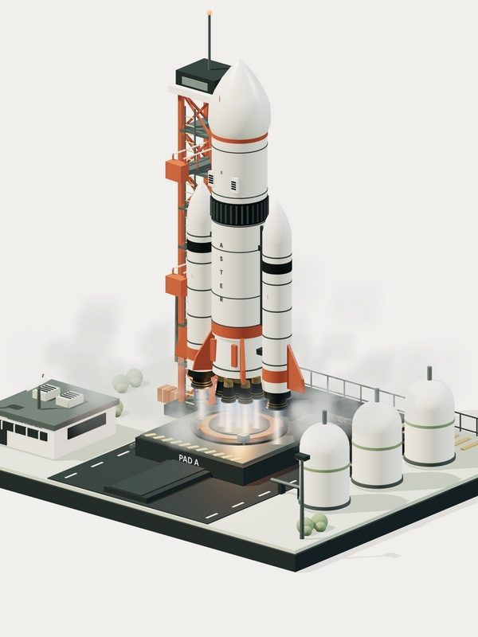
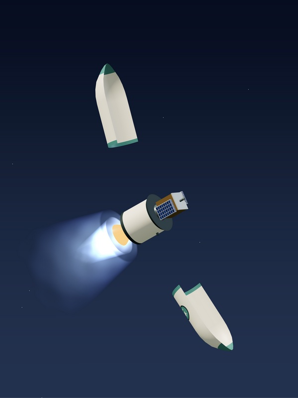
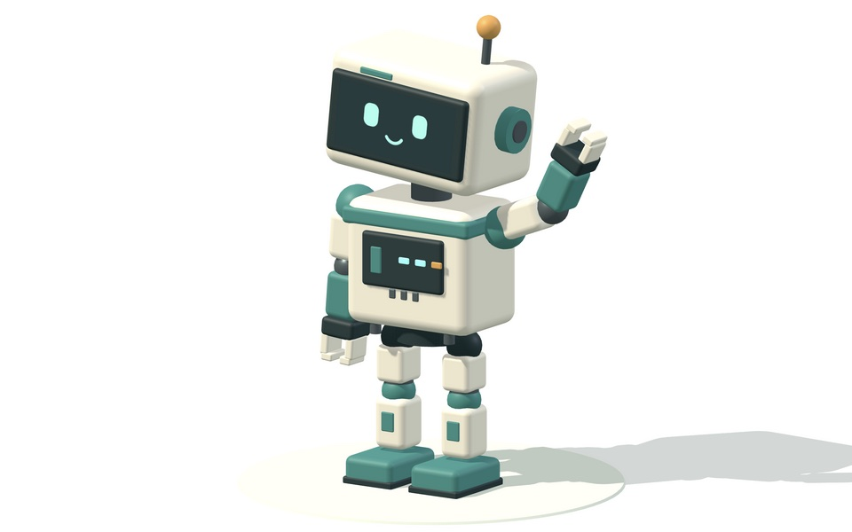
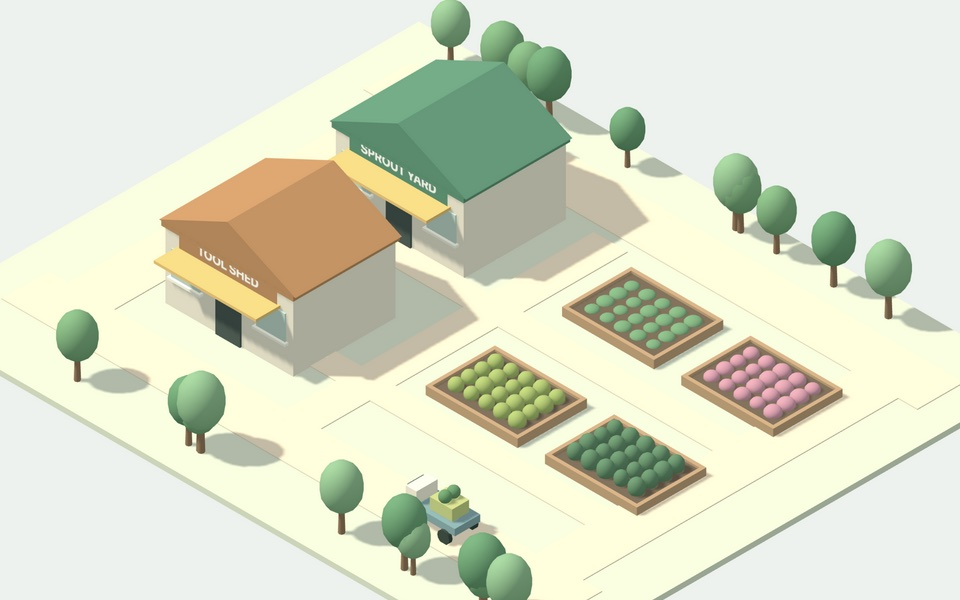

Small worlds, built from code.
Four interactive Three.js scenes made from boxes, cylinders, and canvas textures. No model files, no build step. Pick one and play with it in your browser.
Want your own? Install the skill and describe the world you have in mind.

Aster
Launch AsterCount down a nine-engine heavy lifter and watch it clear the tower, by day or by night, with optional launch sound.

Vela
Fly VelaTake a two-stage rocket from the pad to orbit: staging, fairing separation, and a satellite that unfolds its solar arrays.

Roo
Meet RooAn articulated robot that idles, waves, walks, and dances. Recolor it, then download it as an animated model.

Sprout Yard
Visit Sprout YardA garden center with delivery carts on the move and planting beds you can select, inspect, and plant.
Build your own world.
Every scene here was made with the procedural-isometric-worlds skill for Codex. Install it, then ask for a factory, a farm, a transport hub, or anything else small enough to sit on a desk.
git clone https://github.com/gurungabit/procedural-isometric-worlds.git ~/.codex/skills/procedural-isometric-worldsUse $procedural-isometric-worlds to build an interactive recycling depot with conveyors, sorting bins, and trucks.